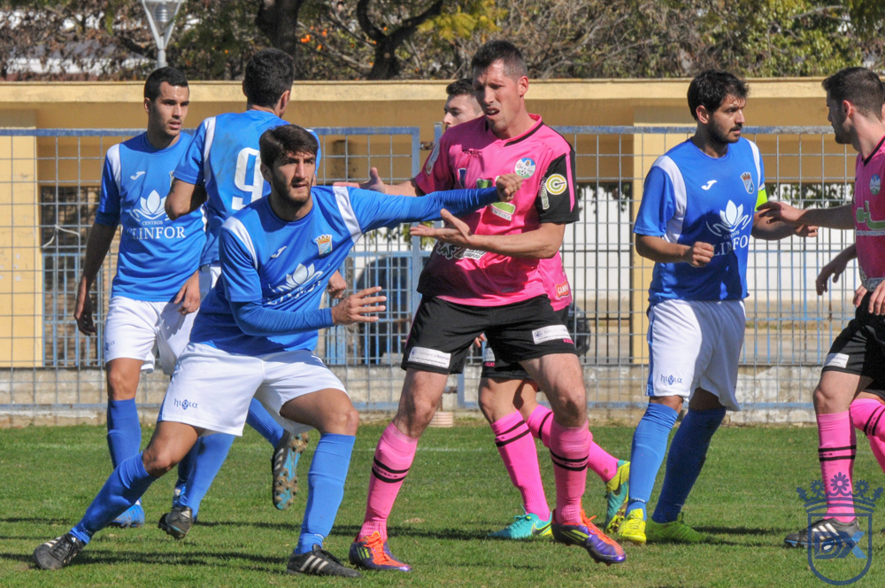

Xerez drew their first meeting with Lucena in front of 400 spectators

Photo: Diario XerecistaOn 29 January 2017, on matchday 22 of the División de Honor, the blue-and-whites and the sky-blues met for the first time. It ended 0-0 in front of around 400 spectators at what is now the Pedro Garrido, in a battle at the top of the table that ended with both teams winning promotion to the Tercera.
Before the ten meetings in Jerez and the promotion play-off in Estepona, there was a first day. Xerez CD and Ciudad de Lucena faced each other for the first time on 29 January 2017 at the La Juventud stadium, now the Pedro Garrido, on matchday 22 of Group I of the División de Honor. The match ended goalless in front of around 400 spectators.
A battle at the top of the table
Both teams came into the fixture fighting for the top places in the standings. The score did not change throughout the match, which was refereed by Vázquez Hidalgo of the Huelva committee. He booked Guerrero for Xerez, and Troyano, Migue Espinosa and Fede Acuña for Lucena.
Vicente Vargas's eleven
Xerez, coached by Vicente Vargas, lined up with David Zamora; Barragán, Kevin, Álvaro Guerrero, Quirós; Isra, Agus, Juanito Benítez, Alberto; José Vega and Pedro Carrión. In the second half Javi, Abraham, Rubén and, in the 89th minute, Güiza came on.
Ciudad de Lucena lined up with Alberto González; Javi Guerrero, Migue Espinosa, Troyano, Antonio Lucena; Curro Vacas, Sergio Torres, Alfonso Castellano; Erik, Germán del Pozo and Gabri Mayorga. Fede Acuña, Miguel Sanz, Javi Ruiz and Pedro Caballero came on later.
Two promotions and a rivalry
That season ended well for both: Xerez finished third and Lucena fourth, and both were promoted to the Tercera División. It was the start of a fixture that has been repeated many times since. At home, Xerez have ten previous meetings with Lucena, with two wins, four draws and four defeats.
Almost ten years later, the fixture reaches the Segunda RFEF for the first time. On Sunday 18 October, at 19:00, Chapín hosts a new chapter in a story that began with a goalless draw at La Juventud.
🇪🇸 Leer en español ← Back to home